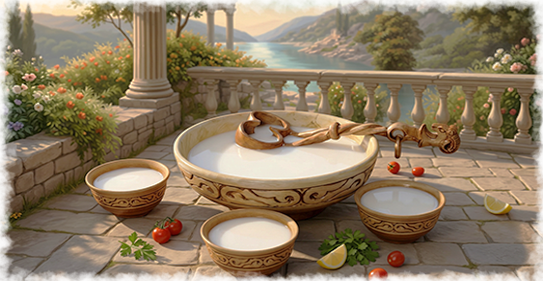
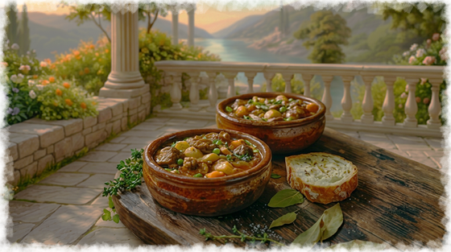

Эт аяклак - караимские пирожки с мясной начинкой, которые считаются одним из важнейших кулинарных символов этого народа. Название происходит от тюркских слов эт - «мясо» и аяклакъ - «блюдо» или «чаша». Чаще всего его готовят из пресного или дрожжевого теста с начинкой из мелко рубленой жирной баранины (иногда говядины) с добавлением большого количества лука и специй.
Кымач. Простая, но сакральная каша из пшеничной крупы, сваренная на молоке или воде с добавлением масла и соли, — основа повседневного трапезы караимов, уходящая корнями в эпоху ханства. В постные дни ее готовят с тыквой или курагой, добавляя мед для сладости.

Кымач. Простая, но сакральная каша из пшеничной крупы, сваренная на молоке или воде с добавлением масла и соли, — основа повседневного трапезы караимов, уходящая корнями в эпоху ханства. В постные дни ее готовят с тыквой или курагой, добавляя мед для сладости.
Силькмэ — это традиционное блюдо караимской национальной кухни, в котором отражен многовековой кулинарный опыт и древние традиции этого народа. Одной из характерных особенностей караимского рациона является сочетание различных видов баранины с овощами, рисом или тестом.

Ак-алва - белая халва. Традиционная сладость, которую готовили на праздники или свадьбы из сахара, орехов и яичных белков. Этот десерт рожден в эпоху ханства под влиянием османских традиций. Караимы готовят его на свадьбы и субботы, веря, что каждый слой - ступень к гармонии, как в толковании Торы. Подают с чаем из горных трав.
Буза (махсыма): Древний хмельной напиток из проса, риса или пшеницы, получаемый путем сбраживания. В караимских семьях буза до сих пор считается национальным напитком, сопровождающим праздничные встречи.